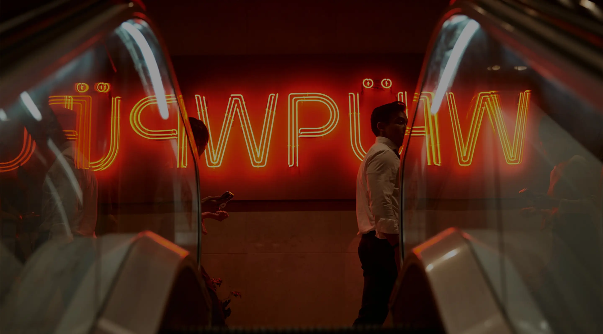
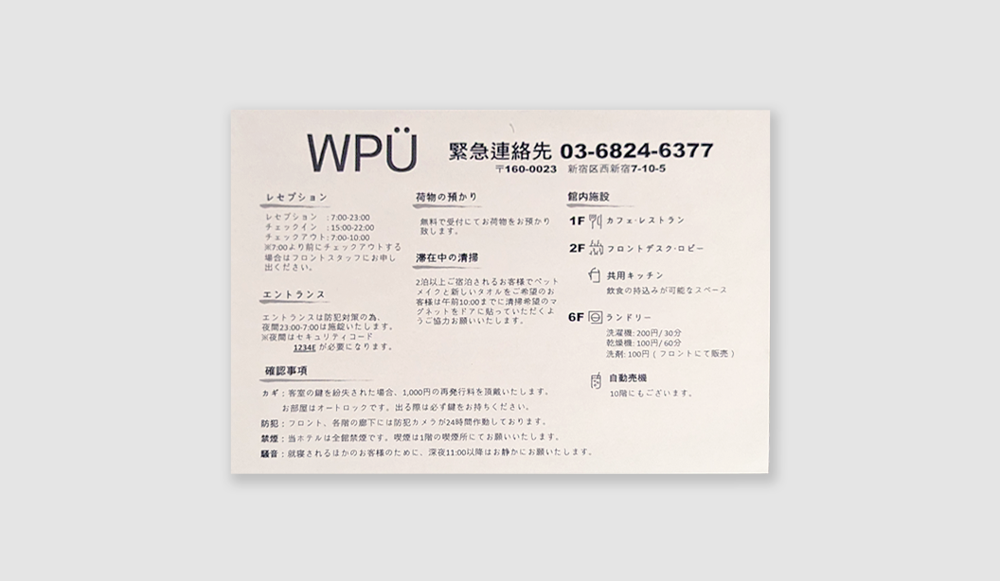
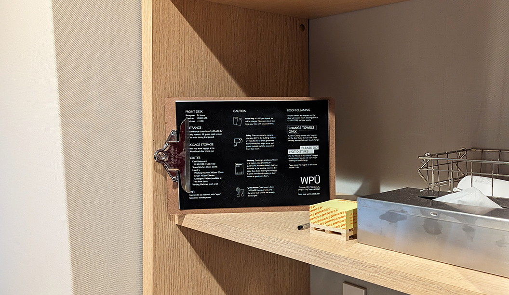
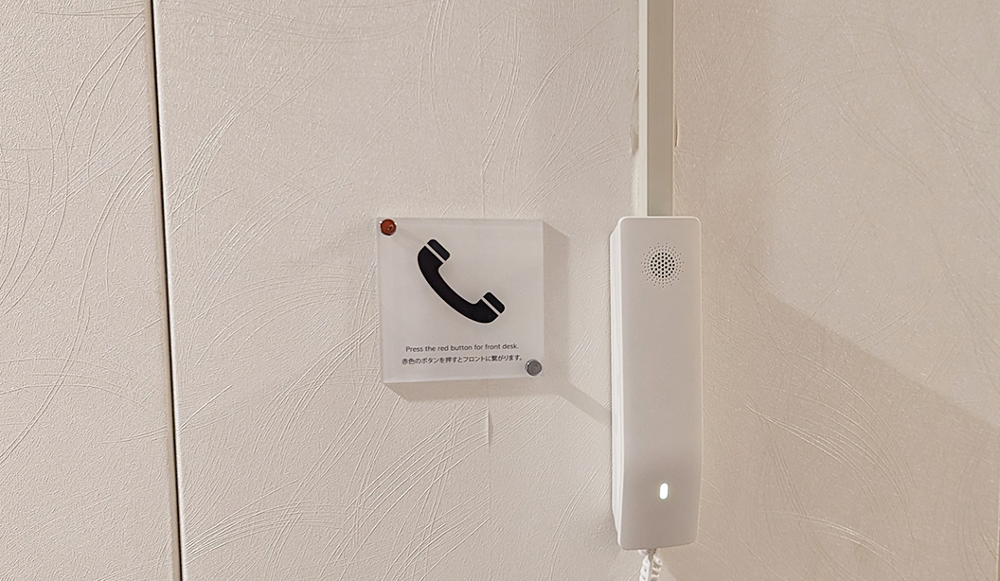
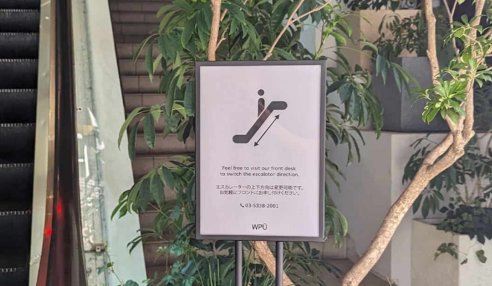

WPÜ Shinjuku Hotel

Company: WPÜ Shinjuku Hotel, Hospitality
Position: Customer Service Specialist
Date: May 23 - Nov 23
Services: Customer Experience (CX), User Experiecne (UX)
WPÜ Shinjuku Hotel is a hotel in the heart of Tokyo, Japan opened in May 2023. The owner of the hotel has expertise in hotel management and owns another local guesthouse in Hakone, Japan.

As a newly opened hotel, WPÜ Shinjuku Hotel encountered the challenge of delivering a seamless customer experience across diverse user groups. The hotel received a lot of negative reviews but with limited human resources, the hotel often resorted to inadequate solutions, which hindered its ability to project professionalism and fully engage guests. Addressing these shortcomings became essential for enhancing the overall guest experience.

Being the only front desk staff member with design experience at WPÜ Shinjuku Hotel, I took the initiative to enhance the overall guest experience. My role at the front desk allowed me to identify key areas of user dissatisfaction, including the outdated website, inaccurate or missing information in the hotel, and an inconsistent check-in and check-out process. To gain deeper insights, I conducted user research through brief interviews with guests during check-in and check-out, collecting valuable feedback and opinions. Armed with this information, I quickly developed a set of feasible solutions and presented them to management, seeking approval for implementation to improve the hotel’s operations.

I was able to effectively update the website, reorganize online information, and redesign the check-in and check-out process. As a result of these improvements, the overall user experience for hotel guests was elevated, which led to a reduction in front desk workload by at least 10%. Additionally, I successfully eliminated 50% of negative customer ratings across all online booking platforms by implementing clear signage within the hotel and introducing an easy-to-navigate information sheet for the check-in and check-out process.

